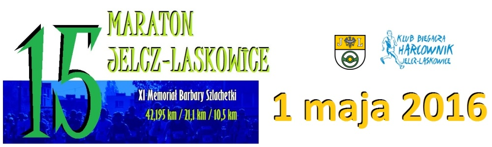
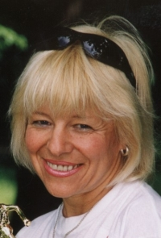

(ur. 17 maja 1956 w £om¿y - zm. 24 listopada 2005 w Hamburgu) - wiecznie u¶miechniêta lekkoatletka, rekordzistka ¶wiata, ultramaratonka,
najbardziej utytu³owana polska biegaczka.
Mieszkanka Jelcza-Laskowic, bra³a udzia³ w pierwszych edycjach naszego maratonu.
Od lipca 2004 zmaga³a siê z chorob± nowotworow±. Mimo tego nie przesta³a biegaæ i braæ udzia³u w wielu imprezach sportowych. Swoj± walkê
przegra³a, pozostanie jednak w naszej pamiêci jako podziwu godny sportowiec i wspania³y cz³owiek.
|
 |
Po¶ród wielu informacji o Basi w internecie na szczególn± uwagê zas³uguje opis zamieszczony na portalu biegajznami.pl, wspomnienie Basi
napisane zapewne na krótko przed Jej ¶mierci±:
''By³o to dos³ownie kilkaset metrów po starcie tegorocznego maratonu w Zurichu, gdy zobaczy³em przed sob± zgrabn± blondynkê z napisem
''Klub 100 maratonów'' na koszulce. To ten sam klub do którego nale¿y Basia Szlachetka, pomy¶la³em nawet przez chwilê aby zapytaæ o ni±
nieznajom± biegaczkê.
Szybko jednak zmieni³em zdanie. W koñcu przyjecha³em do Szwajcarii biæ ¿yciowy rekord, a nie na pogaduszki z atrakcyjnymi biegaczkami.
Ledwo j± wyprzedzi³em us³ysza³em za sob±: "Cze¶æ Polska!" (na plecach mojego t-shirtu by³ wielki napis "POLAND" ). Teraz nie mia³em
w±tpliwo¶ci, to z pewno¶ci± Basia we w³asnej osobie!
Ci, którzy o niej s³yszeli nie zdziwi± siê, i¿ zapomnia³em w jednej chwili o maratonie. Tym bardziej, ¿e Basia potrafi tak cudownie
opowiadaæ o swych biegowych przygodach. A mo¿e który¶ z pocz±tkuj±cych biegaczy jeszcze o Basi nie s³ysza³? No to pos³uchajcie.
Rekord ¿yciowy w biegu maratoñskim Barbary Szlachetki, który wynosi 3:33:56 (2 lata temu we Wiedniu) nie powala na kolana. Nie¼le, ale
¿eby mówiæ o "najwytrzymalszej Basi ¶wiata"? To chyba przesada, nawet je¿eli dodamy, ¿e ¿yciówkê bi³a w wieku 46 lat, a biegaæ zaczê³a
zaledwie 5 lat wcze¶niej. A jednak na takie miano Basia bez w±tpienia sobie zas³u¿y³a. Muszê Wam opowiedzieæ jak czêsto i w jakich
warunkach nasza rodaczka biega maratony i du¿o d³u¿sze dystanse.
Pytana o to jak wygl±da jej trening odpowiada, ¿e specjalnie nie trenuje, po prostu raz na tydzieñ (a nierzadko 2, 3, 4 lub nawet 5 razy
w tygodniu) biegnie sobie maraton lub "co¶ wiêkszego". Nie ma w tym przesady. Szlachetka trafi³a do Ksiêgi Guinnessa po przebiegniêciu
100 maratonów w 101 tygodni (15.11.97 do 24.10.99 ) i 52 maratonów podczas roku (15.11.97 do 14.11.98). Ten drugi rekord polega³ na tym,
¿e by³y to pierwsze 52 maratony w jej ¿yciu, teraz biega rocznie du¿o wiêcej.
Wielu porównuje j± do s³ynnego Foresta Gumpa. Pewnego dnia wybieg³a z domu (a mia³a wówczas 42 lata) i biega tak do dzisiaj. Z Forestem
³±czy j± jeszcze jedno. W dzieciñstwie cierpia³a na bezw³ad nóg. Gdy mia³a 3 lata lekarze uwa¿ali, i¿ poruszaæ siê bêdzie mog³a tylko
na wózku inwalidzkim. Twierdzi, ¿e wyleczyli j± dziadkowie. Sposób w jaki uda³o im siê tego dokonaæ by³ doprawdy niezwyk³y: k±pali
ma³± Ba¶kê w wywarze z mrówek. Pomog³o! Dzisiaj Barbarze zdarza siê pobiec 2 maratony podczas jednego dnia. Tak by³o na pocz±tku
sierpnia zesz³ego roku kiedy o 7-ej rano wystartowa³a w maratonie Hartwigsdorf (czas 4:18), przejecha³a samochodem 150 km do Rostocku
i o 17-tej wyruszy³a po raz kolejny w 42-kilometrow± trasê (4:22).
Jej maratony rzadko kiedy s± "normalne". Czêsto biega np. 42,195 pod ziemi±: w lochach (jak w grudniu ubieg³ego roku w Holandii), tunelach
(zwyciê¿y³a w maratonie w tunelu prowadz±cym pod Tamiz±) czy kopalniach. O jednym z takich kopalnianych maratonów i swym spotkaniu z
Basi± pisa³ niedawno bardzo ciekawie Darek Sidor - "Wy¶cig podziemnymi górami". Biegacze musieli biec w kaskach, gdy¿ korytarze by³y
ciasne i ¶liskie, a ze sklepieñ zwisa³y sople soli. Brak powietrza, wysokie temperatury i bardzo ma³a wilgotno¶æ powietrza to inne
przeszkody, z którymi boryka³a siê Basia. Równie¿ zesz³oroczny Dzieñ Kobiet spêdzi³a 550 metrów pod ziemi±, biegn±c maraton w kopalni
w okolicy Eisenach. Jest te¿ jedyn± kobiet± na ¶wiecie, która mo¿e pochwaliæ siê atestowanym przebiegniêciem maratonu na bie¿ni
mechanicznej (czas 4:03), zaznacza przy tym, ¿e ¿aden du¿o d³u¿szy nawet dystans nie da³ siê tak mocno we znaki jej kolanom jak ta
bie¿nia w³a¶nie.
W czasie maratonu na Saharze wypi³a podczas biegu 16 litrów wody (30 stopni Celsjusza w cieniu i oko³o 50 w s³oñcu). Dotar³a na metê
jako druga kobieta (³±cznie 38 na 148 startuj±cych), przysiêg³a jednak, ¿e nigdy nie powróci do Afryki. Byæ mo¿e dlatego, i¿ jako blondynka
zrobi³a furorê w¶ród Arabów, którzy wyceniali jej warto¶æ na oko³o 60 wielb³±dów. Wkrótce potem wystartowa³a jednak w biegu na 100 km w
Egipcie, pod piramidami. Z 38 startuj±cych zaledwie jedenastka dotar³a do mety, w tym Barbara jako 4 w ³±cznej klasyfikacji i jako jedyna
kobieta. Trasê pokona³a w 11 godzin i 1 minutê. Co jednak najbardziej niezwyk³e, ju¿ dwa dni pó¼niej pobieg³a "normalny" maraton
(Ateny) i zabrak³o jej zaledwie 1 minuty do "z³amania" 4-ch godzin.
W ubieg³ym roku w Kolonii Basia Szlachetka stoczy³a za¿arty pojedynek z Niemk± Heike Pawzik podczas rozgrywanego tam biegu 48-godzinnego
(nale¿y przebiec jak najd³u¿szy dystans w 2 doby). Niemka prowadzi³a przez wiêksz± czê¶æ biegu, nie wytrzyma³a jednak i przerwa³a wy¶cig
na 2 godziny aby siê zdrzemn±æ. Szlachetka, która zrobi³a tylko jedn± 14-minutow± przerwê na masa¿ nie odda³a ju¿ prowadzenia. Przebieg³a
348 km i 915 metrów poprawiaj±c swój rekord Polski, ustanawiaj±c rekord Europy i 2-gi czas na ¶wiecie (rekordzistk± ¶wiata jest Amerykanka
Sue Ellen Trapp, która w 1993 roku przebieg³a w 48 godzin 360,109 km). Równie¿ rok temu Basia zdoby³a tytu³ mistrza Niemiec w biegu
24-godzinnym. Przebieg³a w ci±gu doby 211, 990 km. W¶ciek³a na mecie by³a niesamowicie z powodu tych brakuj±cych do okr±g³ego wyniku
10 metrów. Zawinili organizatorzy, którzy nie potrafili zapobiec wtargniêciu na trasê wiwatuj±cej na cze¶æ naszej rodaczki publiczno¶ci,
co uniemo¿liwi³o jej przebycie jeszcze kilku metrów.
26 - 27 wrze¶nia 2003 spe³ni³o siê najwiêksze marzenie dzielnej Basi - wystartowa³a w Spartatlonie. Udzia³ w tej imprezie jest limitowany
i ³±czy siê z bardzo wysokim wpisowym. W ubieg³ym roku Basia znalaz³a wreszcie hojnego sponsora. Bieg ten odbywa siê (podobnie jak bieg
maratoñski) dla uczczenia greckiego ¿o³nierza Filippidesa, który 2500 lat temu (490 p.n.e.) pobieg³ z Aten do Sparty (245 km) z pro¶b±
o pomoc w walce przeciw Persom, po uzyskaniu odmownej odpowiedzi powróci³ biegiem do Aten. Stamt±d pobieg³ do Maratonu (40 km), wzi±³
udzia³ w bitwie z Persami i pobieg³ do Aten aby poinformowaæ o zwyciêstwie. Czy¿ mo¿na siê dziwiæ, ¿e wyzion±³ by³ ducha na ateñskim
rynku? Pani Barbara przebieg³a z Aten do Sparty w 31:50.23, zajmuj±c 20 miejsce w klasyfikacji ogólnej i 3-cie w klasyfikacji
kobiet. (...)
W dniu naszego spotkania Basia musia³a siê oszczêdzaæ. Traktowa³a ten bieg wybitnie rekreacyjnie. Tydzieñ wcze¶niej bra³a udzia³ w
wy¶cigu na 100 kilometrów. Trasa prowadzi³a w wiêkszo¶ci po betonowej nawierzchni i nasza rodaczka czu³a to w nogach. Nie by³o to
oczywi¶cie powodem aby kilka dni pó¼niej nie pobiec maratonu, a potem niemal "z marszu" nie wystartowaæ w Zurichu. Planowa³a czas w
okolicach 4:30. Musia³a siê oszczêdzaæ. Mia³a zamiar w nadchodz±cym tygodniu przebiec 3 kolejne maratony co da³o by jej ³±czn± liczbê
300 przebiegniêtych. No, a potem przygotowania do bicia rekordu ¶wiata w biegu 48-godzinnym. Najchêtniej odpu¶ci³bym sobie ten bieg
i truchta³ z Basi± a¿ do mety (gdyby¶cie wiedzieli jak ona siê cudownie u¶miecha!). Pogna³a mnie jednak do przodu obiecuj±c, ¿e
odszukamy siê na mecie. Jeszcze dwukrotnie po nawrotach, gdy mijali siê biegacze pod±¿aj±cy w ró¿nych kierunkach, dodawa³a mi otuchy
krzycz±c ze wszystkich si³ "Leszek! Trzymaj siê Leszek!"
Basi nic nie wysz³o z planowanych 4:30. Pobieg³a (rekreacyjnie) 3:48.10. Widzia³em jej finisz. Co¶ niesamowitego. U¶miechniêta od ucha
do ucha zostawia³a za sob± kolejnych biegaczy.
I jak, zgodzicie siê ze mn±, ¿e to najwytrzymalsza Ba¶ka na ¶wiecie?''
Pamiêci Barbary Szlachetki po¶wiêcamy kolejny, dziesi±ty ju¿ Maraton Jelcz-Laskowice. Do udzia³u w nim zapraszamy i Pañstwa.
|

|